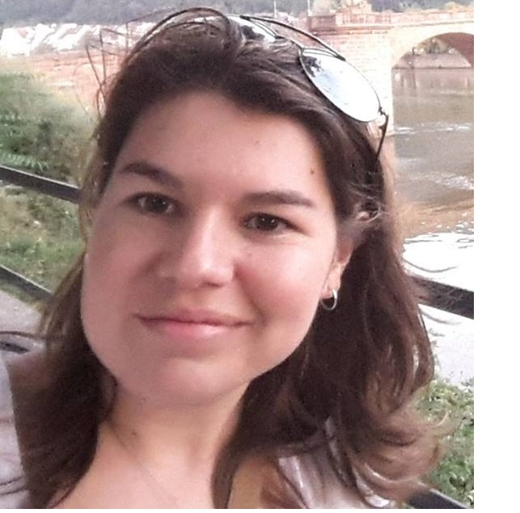

I am an assistant professor at the Costa Rican Institute of Technology or TEC (Tecnológico de Costa Rica), working in the Electronics Engineering department. My research focus on the use of machine learning and non-invasive technologies (e.g. wearable and embedded devices, cameras, physiological sensors) to understand human behavior, monitor health, and improve people’s quality of life.
Previously, I worked as a postdoctoral researcher in the Eindhoven University of Technology(The Netherlands) where I was involved in the ALARM Project from e\MTIC. This project was a collaboration with the Maxima Medical Center and Philips research. I also worked as a post-doctoral researcher in the Socially Perceptive Computing Lab in TU Delft (The Netherlands), where I am currently a guest researcher.